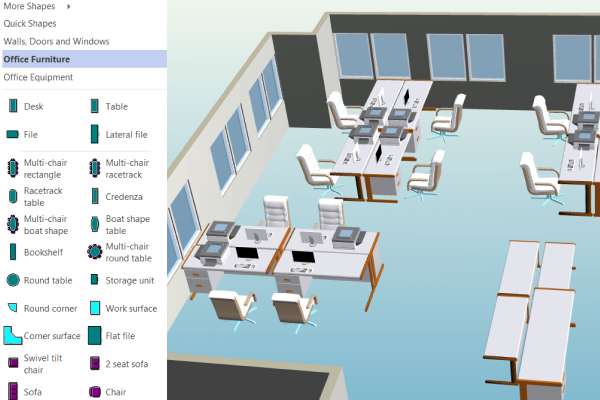

BIM Use: Asset Management

Asset Management
A process in which an organized management system is bi-directionally linked to a record model to efficiently aid in the maintenance and operation of a facility and its assets.
Asset Management utilizes the data contained in a record model to populate an asset management system (AMS). This system is used to determine cost implications of upgrading building assets, segregate costs for tax purposes, and maintain a current comprehensive database of the company's asset value. The bi-directional link allows users to visualize the asset in the model before servicing it, potentially reducing service time.
Operational Efficiency
- Store operations manuals, maintenance guides, and specifications for instant access.
- Automatically generate scheduled work orders for maintenance staff.
- Provide one comprehensive source for tracking usage, performance, and maintenance history.
- Increase opportunity for measurement and verification of systems during occupation.
Financial & Strategic
- Produce accurate quantity takeoffs for financial reporting and bidding on upgrades.
- Aid financial department in analyzing assets via increased visualization (e.g., tax segregation).
- Perform and analyze facility/equipment condition assessments.
- System: Asset Management System / CAFM / IWMS.
- Integration: Tools to bi-directionally link the Model and AMS (e.g., COBie data exchange, proprietary plugins).
- Data Standard: Defined Asset Information Requirements (AIR).
- Strategic: Pre-design knowledge of which assets are worth tracking (Dynamic vs. Static).
- Financial: Knowledge of tax requirements (segregation) and related software.
- Technical: Ability to manipulate the AMS and navigate the 3D model.